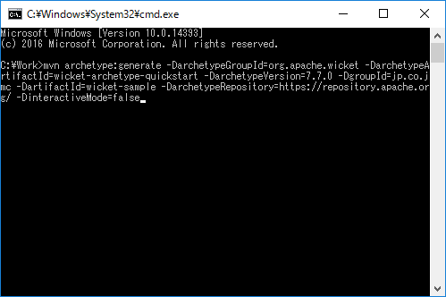
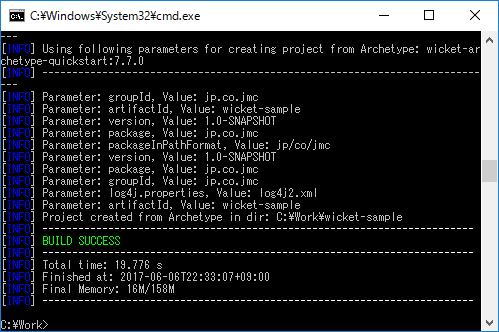
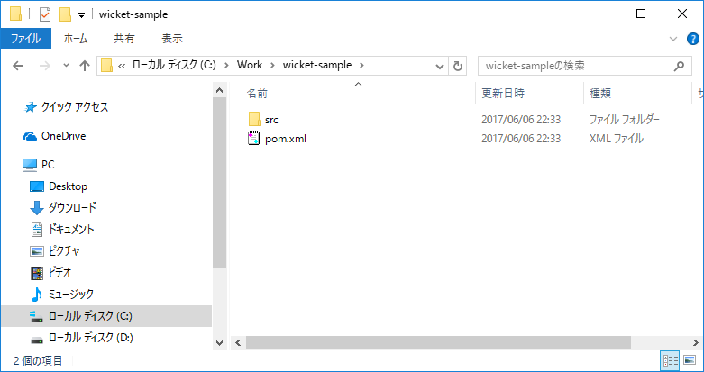
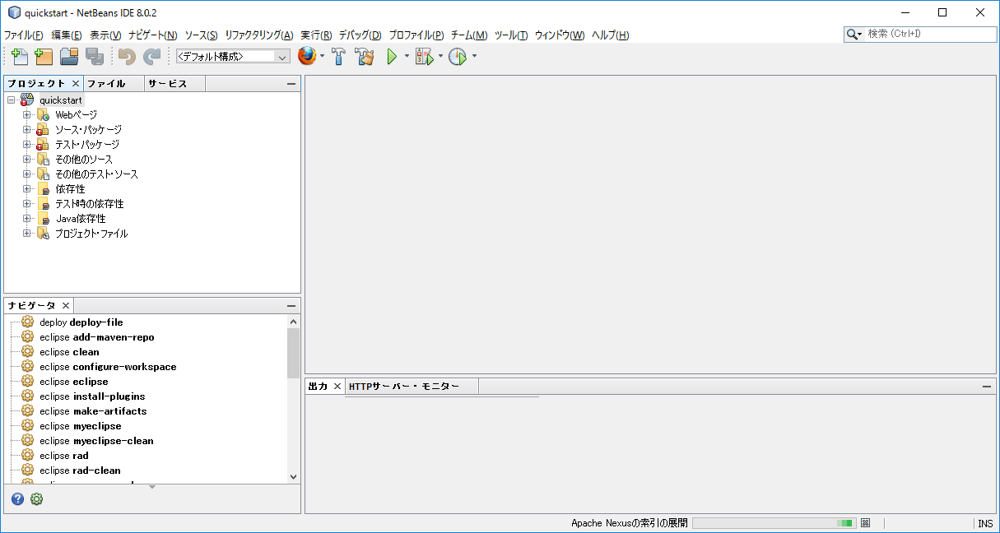
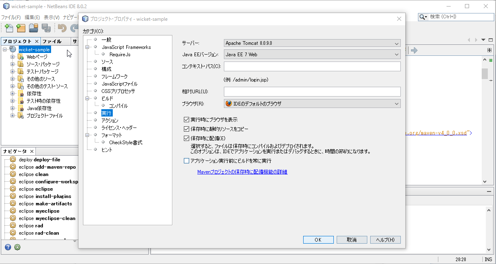
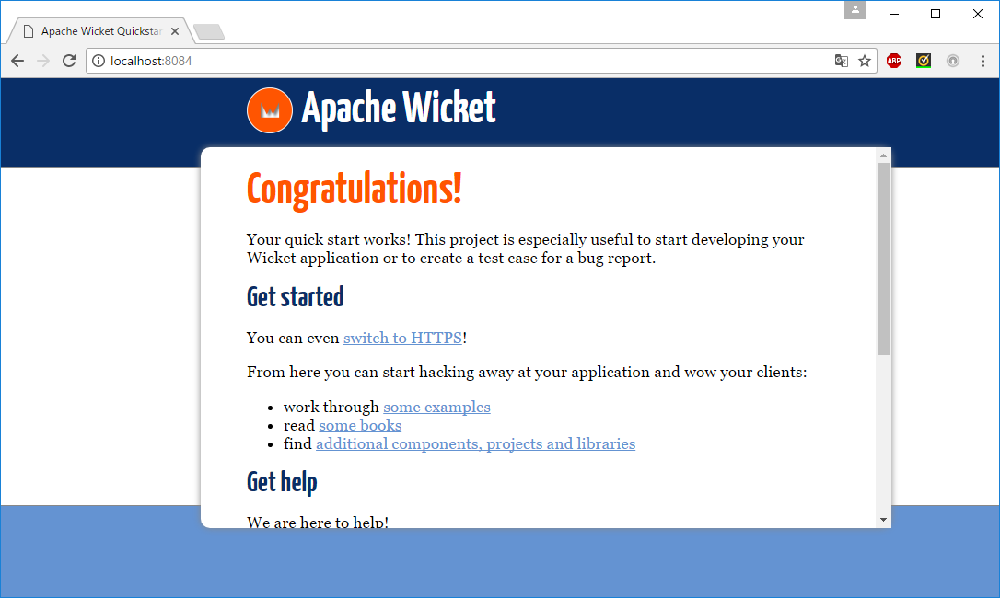

Apache Wicket
Apache Wicketとは
Apache Software Foundationが提供するWebアプリケーション開発フレームワークです。
Wicketの特徴
「Webページをページというオブジェクトとして扱い，オブジェクトを組み立てることでアプリケーションを構築する」という考え方に基づいてデザインされています。
アプリケーションの作成
Wicketのサイトにて「QuickStart」を実施
※あらかじめApache Mavenのセットアップが必要

「generated command line」をコピーMavenコマンド実行
コピーしたコマンドを実行する。
コマンド実行後
プロジェクトが作成されていることを確認
プロジェクト取込み
NetBeansでプロジェクトを取込。 
Appサーバ設定

Appサーバ起動
サンプルページが開くことを確認
